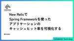
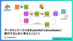
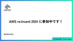
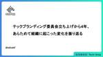

Uzabase for Engineers
https://tech.uzabase.com/
SPEEDA, NewsPicksなどを開発するユーザベースのTech Blog & エンジニア採用サイト
フィード

New RelicでSpring Frameworkを使ったアプリケーションのキャッシュヒット率を可視化する 14
14
Uzabase for Engineers
この記事は New Relic Advent Calendar 2024 と NewsPicks Advent Calendar 2024 の7日目の記事です。 ソーシャル経済メディア「NewsPicks」SREチームの飯野です。 NewsPicksではサービスの状態を可視化するために New Relic APM（Application Performance Monitoring）を導入しています。ことあるごとにNew Relicのダッシュボードを確認することでサービスの状態の把握や、安定性向上、パフォーマンス改善のヒントを得ています。 今回はNew RelicのAPMでは用意されていないキ…
3日前

データウェアハウスをRedshiftからSnowflakeに移行するために考えたこと（１） 45
Uzabase for Engineers
この記事は NewsPicks Advent Calendar 2024 の6日目の記事です。 ソーシャル経済メディア「NewsPicks」の中村です。最近はデータ基盤の開発運用、データアナリストのサポート、LLM活用等をやっています。 現在、NewsPicksではデータウェアハウスとして長年利用してきたAmazon RedshiftからSnowflakeへの移行を進めています。まだ移行作業の途上ではありますが、完了の目処が立ったので、なぜデータ基盤の移行を行なっているのか、どのように移行計画を立てたか、実際に移行作業を進めてみてどうだったか等を紹介したいと思います。データ基盤を運用している方…
4日前

AWS re:Invent 2024 に参加中です！
Uzabase for Engineers
ソーシャル経済メディア「NewsPicks」(BDD Product) の西（@yukinissie）です！ この記事は NewsPicks Advent Calendar 2024 の4日目の記事です。昨日はNewsPicksの守護神（初めて呼びました）QA西園さんによる「QA が Notion API を使ってちょっとしたシステムを作った話」でした。 本エントリーでは絶賛参加中のAWS re:Invent 2024 の体験をレポートします！ とは言ってもすみません！本エントリーを書いている現在はまだ1日目の正午*1なので0日目をさくっと紹介します！がっつり全ての内容が見たいよーって方は別エ…
6日前

テックブランディング委員会立ち上げから4年、あらためて組織に起こった変化を振り返る 14
Uzabase for Engineers
ソーシャル経済メディア「NewsPicks」の高山です。 この記事は NewsPicks Advent Calendar 2024 の2日目の記事です。昨日は我らがあんどぅさんによるプロジェクトマネジメントのお話でした。 はじめに 2020年頃から2024年までの4〜5年ほどかけて、社内でテックブランディングの盛り上げ担当をしてきましたので、そのまとめを書いていきます。 だいぶ長くなりましたが、備忘録も兼ねて書いていきますのでご興味のある方はお付き合いください。 僕は2020年にNewsPicksに入りまして、最初の2年ほどはCTOをしていました。その後はNewsPicksではいわゆるSREな…
8日前

エンジニアも知っておきたい『プロジェクトマネジメント』〜カレー作りで学ぶPMBOKの実践的TIPS〜
Uzabase for Engineers
NewsPicks Advent Calendar 2024 一日目の記事です。 こんにちは！ソーシャル経済メディア「NewsPicks」の安藤です。長らくSREチームのプレイングマネージャーをしていたのですが、最近はEMとして自分の技術的専門性とは異なる担当領域の開発チームもサポートしています。 その中で気づいたのが、「プロジェクトマネジメントを通じてならどのチームでもエンジニアリングマネージャーとして一定のバリューを発揮できるかもしれない」ということです。 私自身は前職で10年以上プライムのSIerに在籍しており、PMを務めたことはありませんが一流のPMの元で開発リーダーとして一緒に仕事を…
10日前
LLMアプリ開発を楽にするPromptyをPromptflowで使ってみよう
Uzabase for Engineers
株式会社ユーザベース スピーダ事業 の阿波連です。 私が参加しているアジャイルダッシュボードチームはスピーダ経済情報リサーチのダッシュボードを開発しています。 ダッシュボードには「AI決算サマリー」という機能があります。先日、要約データを更新し、以前よりも要約精度が良くなりました。 今回は、AI決算サマリーの裏側で使用しているLLMと関連して、PromptflowにあるPrompty機能について紹介します。なお、Prompty機能は2024年11月27日執筆時点でExperimental featureですので利用時は考慮してください。 Promtflowとprompty Promptflow…
12日前
セッションハイジャックとセッションIDの固定化攻撃 セキュアコーディングの啓蒙 第5回
Uzabase for Engineers
はじめに こんにちは！ 株式会社ユーザベース スピーダ事業 Product Team（以下 Product Team）の下川です。 ユーザベースの Product Team には、全社のセキュリティを担うチームとは別に、プロダクトセキュリティの底上げを担うセキュリティチーム、通称 Blue Team というチームがあります。 私たちはそのチームの一員として、日頃の開発業務に加えてユーザベースのプロダクトのセキュリティを横断的に向上するための活動を行なっています。 現在、 Blue Team の取り組みのひとつとして、脆弱性のリスクや対策方法について継続的に記事にまとめ、Product Team…
14日前
NASAから学ぶ！リスクを成功に導く3つのこと - QCon San Francisco 2024
Uzabase for Engineers
はじめに スピーカー紹介 「計算されたリスク」とは何か？ リスクを取る前に価値を見極める 「計算されたリスク」を取るためのフレームワーク 1. Think Bigger! まず行動を起こすことが重要、無行動こそ最大のリスク リスクを取る際は「何がうまくいくか」に焦点を当て、それを最大化する方法を考える 2. De-risk リスクの影響を軽減する手法を取り入れる 冗長性を活用する 3. Be Wrong, a Lot 「Ready, Fire, Aim」の精神 失敗を受け入れ、学びを得る まとめ 感想 参考：火星探査機「Curiosity（キュリオシティ）」 はじめに ソーシャル経済メディア「…
15日前
【イベントレポート】2024年10月19日、親子で楽しむプログラミング教室「Play Engineering for Kids」を開催しました！
Uzabase for Engineers
ユーザベースは、「エンジニアリングを起点に、誰もがビジネスを楽しめる世界の実現」を目指し、テクノロジー・カンパニーであり続けたいと考えています。 2022年4月からスタートした「Play Engineering」というプロジェクトでは、エンジニアではない職種の社員も、楽しくエンジニアリングを学べる研修の実施や、保有するエンジニアリングスキルのレベルによって手当が支給される制度「プラスエンジニアリング手当」の導入など、全社員が対象となるさまざまな取り組みを実施しています。 プロジェクトの一環である「Play Engineering for Kids」は2022年より毎年開催をし、2024年は10…
20日前
Meet UB Tech #52「"全員インシデントコマンダー"という考え方について」を公開しました
Uzabase for Engineers
こんにちは、Uzabaseの角岡です。 ユーザベースのエンジニアカルチャーをゆるっとお伝えするPodcast、Meet UB Tech。 #52のテーマは、「"全員インシデントコマンダー"という考え方について」です。 NewsPicks エンジニアの安藤さんと七五三さんにお越しいただき、お話を伺いました。 podcasters.spotify.com #52 の聞きどころはこちら。 タイトル： "全員インシデントコマンダー"という考え方について 出演者： 安藤裕紀 @integrated1453（NewsPicks SRE Team Leader） 七五三 航（NewsPicks Subscr…
1ヶ月前
Amazon EFSのバーストクレジットを活用してコストを4分の1に削減！
Uzabase for Engineers
ソーシャル経済メディア「NewsPicks」SREチームの美濃部です。 NewsPicksではアプリケーションのビルドにAWS CodeBuildを使用しており、ビルドキャッシュの格納先としてAmazon EFS（AWSのフルマネージド型NFSファイルシステムサービス）を利用しています。 アプリケーションビルド構成 以前はS3に格納していましたが、EFSにする事でビルド時間が2分程短縮できる事がわかったので多少コストを払ってでも開発者の生産性を重視しました。1日に何度もビルドを行う開発者にとってこの2分の積み重ねは大きな価値があります。開発者の人数が多ければ多いほどこの価値もあがります。 ただ…
1ヶ月前
Kotlinのsealed classを使ってif文を取り除き、コードをシンプルにする
Uzabase for Engineers
Kotlinのsealed classでいい感じにコードをシンプルにする事例を紹介します。sealed classをうまく使って、コードの可読性を高めてみましょう。
1ヶ月前
Meet UB Tech #51「ユーザベースのセキュリティの実態に迫る」を公開しました
Uzabase for Engineers
こんにちは、Uzabaseの松並です。 ユーザベースのエンジニアカルチャーをゆるっとお伝えするPodcast、Meet UB Tech。 #51のテーマは、「ユーザベースのセキュリティの実態に迫る」です。 ユーザベース セキュリティチームの王さんと白石さんにお越しいただき、お話を伺いました。 open.spotify.com #51 の聞きどころはこちら。 タイトル： ユーザベースのセキュリティの実態に迫る 出演者： 王佳一（ユーザベース CIO/CISO） 白石憲昭（ユーザベース Security Team Leader） 佐藤一徹 @Ittetsu0501（ユーザベース Holdings …
2ヶ月前
オンボーディング体験記
Uzabase for Engineers
初めましてこんにちは！ ソーシャル経済メディア「NewsPicks」プロダクトエンジニアの 寺坂 です。 2024年5月に中途入社して4ヶ月が経ちました。 だんだんと会社にもチームにも慣れてきたぞ！、ということで、今回は私のオンボーディング体験をご紹介します。 初めましてこんにちは！ 私とオンボーディング オンボーディングカリキュラム ユーザベースでは、パーパス・バリューがとても大事 オープンコミュニケーションと風通しの良さ とても手厚い1on1 まとめ 私とオンボーディング 私にとって、今回が初めての転職となります。 これまではずっと受け入れる側の立場にいたので、改めて逆の立場になってみると…
2ヶ月前
社内システムのセキュリティ向上のため、Lambda + CloudFront + S3でインフラ基盤を再構築した話
Uzabase for Engineers
はじめに ソーシャル経済メディア「NewsPicks」SREチーム・新卒エンジニアの樋渡です。今回は、AWSサービスである「Lambda」「CloudFront」「S3」を用いて、弊社で使用している社内向けシステムの基盤を再構築し、開発者体験の向上やセキュリティ対策を行なったお話です。 お話の内容 弊社で使用している社内向けシステムの一つに「Watson」というシステムがあります。「Watson」とは簡単にいうと「NewsPicks」のユーザーIDをもとにユーザーごとの情報を検索・閲覧できるシステムで、お客様からの問い合わせ対応等に活用される重要なシステムです。「Watson」は構築されたのが…
2ヶ月前
ユーザー行動ログの増減をアラートする仕組みを導入して廃止した話
Uzabase for Engineers
ソーシャル経済メディア「NewsPicks」の高山です。 NewsPicksではユーザーが画面上で操作したときなどに行動ログを記録し、それを分析してサービスの改善に役立てています。 そのログはWebサーバーのnginxで記録されてデータウェアハウスであるAmazon Redshiftに送られるのですが、僕はそのRedshiftまわりのチームを少し前まで持っていました。 今回は、当時おこなった、ログの増減アラートの仕組みについて書いていきます。 何が課題だったか 行動ログの記録処理は、開発者が画面上で確認するわけではないので、エンバグしたままリリースされやすい箇所です。 NewsPicksでも過…
2ヶ月前
Playwrightでのユーザー行動ログのテスト
Uzabase for Engineers
はじめに こんにちは。ソーシャル経済メディア「NewsPicks」の QA/SET チームの海老澤です。 今回は NewsPicks WebにおけるPlaywrightでのユーザー行動ログのテストの取り組みを紹介させていただきます。 ログについて NewsPicks では法人向けサービスや広告システムがあり、法人向けサービスや広告パフォーマンスのレポート、またKPIの追跡などログデータの信頼性がビジネスに直結しています。ログはただの記録ではなく、ビジネスインサイトを得るための重要なデータソースです。 そのため、ログが正確に記録され、リクエストが期待通りに発生しているかをテストで保証することが不…
2ヶ月前
AWS CDKのWeightedTargetGroupを使いEC2からECSへ段階的に移行を進める方法
Uzabase for Engineers
こんにちは。ソーシャル経済メディア「NewsPicks」で主に検索システムを開発しております崔（ちぇ）です。 去年まで弊社の検索システムをEC2上に構築しておりました。今年にそれをコンテナ化しECSへ移行しました。コンテナ化に関しては前回の記事でまとめてますので、ご興味ありましたら是非読んでみてください。 tech.uzabase.com EC2からECSへ移行することに限らず、あらゆる「AからBへ移行する」行為はスイッチを切り替えるように簡単ではありません。 仮に、昨日までAが100%担った処理を、今日からBが100%担うようにしたとしましょう。何かの考慮漏れがあり以下のようなエラーが発生し…
2ヶ月前
LLMの日本語化はベクトル表現にも有効か？LLM2Vecにおける日本語ドメイン適応の効果
Uzabase for Engineers
はじめに こんにちは！ 株式会社ユーザベース スピーダ事業部の飯田です。 この記事では、テキストをベクトルに変換（エンコード）にLLMを用いる際に有効なLLM2Vecという手法を紹介します。 合わせて、LLM2Vecにおける日本語ドメイン適応として、LLM2Vecの処理を日本語で行った場合とLLMの継続事前学習を日本語で行った場合について実験を行ったため、これを紹介します。 LLM2Vecとは LLM2Vecは、"LLM2Vec: Large Language Models Are Secretly Powerful Text Encoders"で提案された手法です。 Llamaなどで有名なL…
2ヶ月前
モノレポ内のディレクトリ構造について考えてみた
Uzabase for Engineers
はじめに 試したこと モチベーション 試してみた感想 さいごに はじめに 株式会社ユーザベース スピーダ事業 Product Teamの阿久津です。 私が開発に関わっているスピーダ 経済情報リサーチは多くのマイクロサービスによって様々な機能が提供されています。 そして、その多くのマイクロサービスはモノレポで管理されています。 今回新しくマイクロサービスを作ることになったのでその際に試したことを書き残そうと思います。 試したこと 今回試したことは単純に一つのマイクロサービスに関わる登場人物を一つのディレクトリにまとめるです。 所謂コロケーション *1というやつです。 実際どのように変えたのかです…
2ヶ月前
CDKでスタック間参照してはならない
Uzabase for Engineers
CDKでスタック間参照してはいけません。スタック間の依存関係が意図した通りに解決されず、cdk deploy時に失敗してしまいます。
2ヶ月前
ディレクトリトラバーサルの脆弱性 セキュアコーディングの啓蒙 第4回
Uzabase for Engineers
ディレクトリトラバーサル はじめに こんにちは！ 株式会社ユーザベース スピーダ事業 Product Team（以下 Product Team）の新熊・度會です。 ユーザベースの Product Team には、全社のセキュリティを担うチームとは別に、プロダクトセキュリティの底上げを担うセキュリティチーム、通称 Blue Team というチームがあります。 私たちはそのチームの一員として、日頃の開発業務に加えてユーザベースのプロダクトのセキュリティを横断的に向上するための活動を行なっています。 現在、 Blue Team の取り組みのひとつとして、脆弱性のリスクや対策方法について継続的に記事に…
3ヶ月前
コンテナをrootで動かすことの実際とSecure by Defaultにする改善案を紹介する
Uzabase for Engineers
こんにちは。株式会社ユーザベース スピーダ事業でSREをしている八代 (@yashirook) です。 先日、社内勉強会でコンテナをrootで動かすことについて話したのですが、そこで気づきがあった人もいたようなので、テックブログにも記事を書いてみることにしました。 はじめに コンテナ技術を利用して開発している人であれば、コンテナをroot以外のユーザーで実行することがベストプラクティスとされていることを耳にしたことがある方が多いと思います。 弊社のテックブログでも、以下の記事が投稿されています。 tech.uzabase.com DockerやKubernetesなどを利用してコンテナをroo…
3ヶ月前
フロントエンド・オブザーバビリティ Meetupを開催しました！
Uzabase for Engineers
ソーシャル経済メディア「NewsPicks」エンジニアの韓です。 先日、弊社ユーザベースオフィスでフロントエンド・オブザーバビリティ Meetupを開催しました。 本記事ではそのイベントレポートをお届けいたします！ イベントについて 🎤 セッション フロントエンドエンジニアとして、オブザーバビリティにコミットすること（イイダユカコさん） ClassiにおけるSentry活用事例（lacolacoさん） observabilityを支える要素技術（sadnessOjisanさん） こつこつ育てる SLO（ニッシー☆） アーカイブ動画 おわりに イベントについて UzabaseではUB Techと…
3ヶ月前
Playwright で簡単な外形監視をやってみた
Uzabase for Engineers
こんにちは！株式会社ユーザベース SaaS事業 Product Team の斉藤・度會・沖です。 業務では主に Elixir / TypeScript / Go を用いて、経済情報サービス「スピーダ」の開発・運用を行っています。 はじめに みなさんは外形監視はなにでやっていますか？ 今回はPlaywrightを使ってWebサービスの簡易的な外形監視を作ってみたので、その紹介をしていきます！ 外形監視を入れたかった動機 スピーダのアジア版の一機能で、各分野に紐付いた直近2件のM&A案件を見られるという機能があります。以下のスクリーンショットのように、タイトルが2件表示されるという仕様です。 その…
3ヶ月前
2024年 SREチームの Google Cloud コスト削減を振り返る
Uzabase for Engineers
なぜコスト最適化することになったか？ Active Assist Cloud Storage ストレージサイズの削減 ストレージクラスの変更 ロケーションの検討 結果 Cloud SQL コスト削減のため、Dev環境の停止を行なった 不要なリソースの削除 結果50%くらい削減することができた テスト環境の削除 テスト環境が起動しっぱなし問題 テスト環境を削除した 不要なテスト環境は削除していこうという啓蒙 結果 BigQuery CUDの購入 Compute Engine Bigtable まとめ なぜコスト最適化することになったか？ 私たちは、株式会社ユーザベース スピーダ事業 Produc…
3ヶ月前
Meet UB Tech #50「Software Design」で NewsPicks が連載中の、『ぼくらの「開発者体験」改善クエスト』の裏側について編集者の西原さんと語ってみた」を公開しました
Uzabase for Engineers
こんにちは、Uzabaseの松並です。 ユーザベースのエンジニアカルチャーをゆるっとお伝えするPodcast、Meet UB Tech。 #50のテーマは、「Software Design」で NewsPicks が連載中の、『ぼくらの「開発者体験」改善クエスト』の裏側について編集者の西原さんと語ってみた」です。 NewsPicks Product Divisionメンバーが、月刊誌「Software Design」で連載している『ぼくらの「開発者体験」改善クエスト』について、その出版元である技術評論社の編集者 西原さんをお招きして、NewsPicks テックブランディングの旗振り役こと高山さ…
3ヶ月前
NewsPicksに推薦システムを本番導入する上で一番優先すべきだったこと
Uzabase for Engineers
はじめに 皆さんこんにちは! ソーシャル経済メディア「NewsPicks」プロダクトエンジニアの森田です:) 私は2024年4月に株式会社ユーザベースに新卒入社し、現在は主にNewsPicksにおける推薦機能の開発改善に携わっています。 NewsPicksでは、ユーザに価値のある経済情報を届けるための施策の一つとして記事推薦機能を導入しています。 本ブログでは、NewsPicks記事推薦機能にて基盤改善がモデル改善につながってCTR（Click Through Rate）を改善できた事例をもとに、私たちが認識した「推薦システムを本番導入する上で一番優先すべきだったこと」を共有します。 また先日…
3ヶ月前
F#でAsyncとResultを組み合わせたときにきれいに書く方法
Uzabase for Engineers
スピーダ事業Product Teamのあやぴーです。 「関数型ドメインモデリング」が翻訳されて日本でもF#が流行る兆しが見えてきたので、今日はF#を書き始めた人が感じやすい違和感を解決する方法についての紹介です。尚、私たちProduct Team内では持っていない人はいないのではないか、と思う程度には購入している人が多い本です。 store.kadokawa.co.jp F#には async コンピュテーション式というものがあり、非同期処理をうまく書きやすいです。例えば、以下のようなコードです。 let asyncFunctionA () = async { return 42 } let a…
4ヶ月前
NewsPicksの課金基盤を作り直した話
Uzabase for Engineers
NewsPicksの課金基盤を作り直した話です。オーソドックスな方法ですが、実際に自分の手で進めてみると、とても学びが多いプロジェクトでした。
4ヶ月前